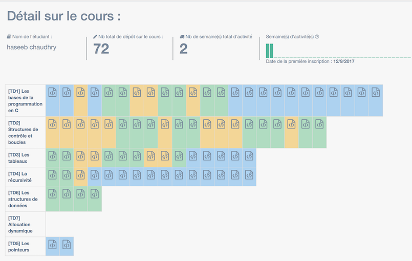
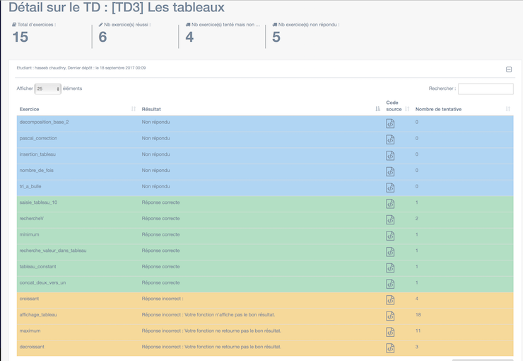

# Stage à l'université Paris Nanterre ### Correction Automatique à base de Tests <small> Par Haseeb Chaudhry </small>
# Sommaire * Présentation de C.A.T * Les outils et technologies utilisées * Les tâches accomplies * Bilan
# Présentation de C.A.T ### Correction Automatique à base de Tests
## Aider les étudiants <img src="ressources/images/stats_miage_etu.png" />
## Pour les étudiants * Améliorer l'autonomie * Améliorer le suivi * Avoir un Contenu personnalisé en fonction du niveau * Apporter des indicateurs sur les compétences acquises
## Pour les enseignants * Correction **automatique** * Economiser du temps dans la **création** de support * Faciliter le **partage** * Archiver les supports, la correction et les dépôts étudiants * Evaluer et **certifier** le niveau d'un étudiant * Corriger en ligne
## L'équipe <img src="ressources/images/equipe.png" />
## Missions * **Améliorer l'existant** * **Corriger les bogues** * **Créer des nouvelles fonctionnalités**
Les outils et les technologies utilisées
## Outils et technologies <img src="ressources/images/outil.png" />
# Les tâches accomplies
## Interface inscription <img src="ressources/images/inscription.png" />
## Validation profs <img src="ressources/images/validation.png" />
## Stats étudiant 
## Stats étudiant 
## Tâches réalisés * Refonte de la page d'accueil profs/étudiant * Trier et sauvegarder l'ordre d'un Tableau * Refonte de la page modification de cours * Correction de divers bogues * Redirection * Bouton qui fonctionne pas * Pop-up qui s'affiche pas
# Bilan
## Bilan * Difficultés pour appréhender les nouveaux outils et langage * Difficultés à s'approprier le code * Découverte de nouvelles pratiques de programmation * Une première expérience du travail collaboratif sur un vrai projet